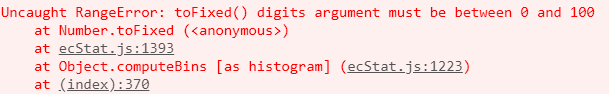
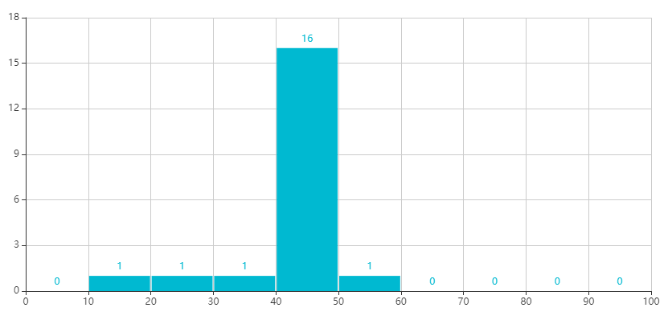

有时我们需要统计自定义echarts图，统计x轴区间的y轴数量。
思路是利用echarts的自定义配置：option.series[i].type='custom'中的renderItem(params, api)函数进行处理,这里包括了两个参数：params是对应每一个dataItem的数据信息;api是可调用的方法（api.value()和api.coord()）。详情可以查看官方文档。
以下是改自官方实例： https://www.echartsjs.com/examples/editor.html?c=bar-histogram ，把以下引用 ecStat.js来处理数据的部分修改成自己拼装成需要的格式
var bins = ecStat.histogram(girth);
var min = Infinity;
var max = -Infinity;
edata = echarts.util.map(bins.data, function (item, index) {
var x0 = bins.bins[index].x0;
var x1 = bins.bins[index].x1;
interval = x1 - x0;
min = Math.min(min, x0);
max = Math.max(max, x1);
return [x0, x1, item[1]];
});原因是引用ecStat.js处理数据时，有时出现以下错误，暂时没找到解决方法。

改写后的代码显示效果如下：

<div id="main1" style="width: 1000px;height: 500px"></div>
<script type="text/javascript">
$(function(){
generateChart();
});
function generateChart(){
var myChart1 = echarts.init(document.getElementById('main1'));
var girth = [19, 26.4, 34, 41.4, 42.4, 42.7, 42.9, 43.1, 43.2, 43.3, 43.3, 43.3, 44.9, 45.4, 46.2, 46.7, 48, 48, 49.1, 54.2];
//自定义拼装数据方式
var edata = new Array();
var scopeMin = 0;
var scopeMax = 100;
var interval = (scopeMax-scopeMin)/10;
var tmin = scopeMin;
while(tmin < scopeMax){
var x0 = tmin;
var x1 = tmin+interval;
var samplenum = 0;
for(var i=0;i<girth.length;i++){
if((scopeMin == x0 && girth[i] < x0) || (x0 <= girth[i] && x1 > girth[i])
||(scopeMin == x1 && girth[i] > x1)) {
samplenum++;
}
}
tmin += interval;
edata.push([x0, x1, samplenum]);
}
var option = {
color: ['rgb(25, 183, 207)'],
grid: {
top: 80,
containLabel: true
},
xAxis: [{
type: 'value',
min: scopeMin,
max: scopeMax,
interval: interval
}],
yAxis: [{
type: 'value',
}],
series: [{
name: 'height',
type: 'custom',
renderItem: renderItem,
label: {
normal: {
show: true,
position: 'top'
}
},
encode: {
x: [0, 1],
y: 2,
tooltip: 2,
label: 2
},
// data: data
data: edata
}]
};
myChart1.setOption(option);
window.onresize = function () {
myChart1.resize();
}
}
function renderItem(params, api) {
var yValue = api.value(2);
var start = api.coord([api.value(0), yValue]);
var size = api.size([api.value(1) - api.value(0), yValue]);
var style = api.style();
return {
type: 'rect',
shape: {
x: start[0] + 1,
y: start[1],
width: size[0] - 2,
height: size[1]
},
style: style
};
}
</script>